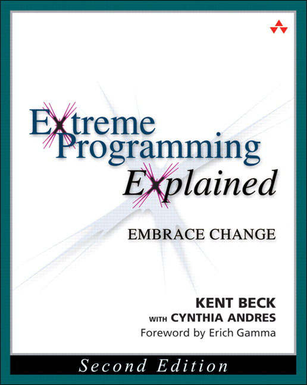
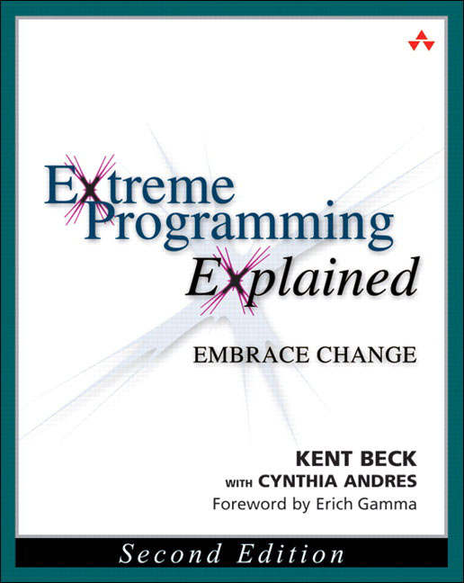
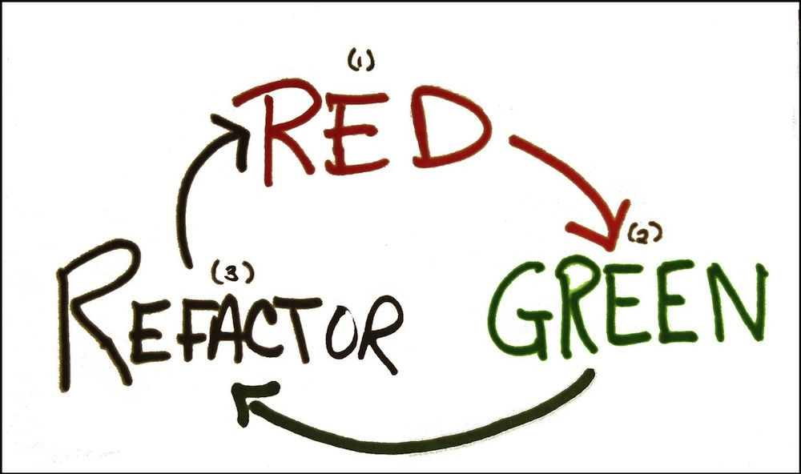

Pratiquer TDD
#TDD ?!
 

La mission ?
Du code propre qui fonctionne...
maintenant!
“Du code non testé est du code qui ne fonctionne pas.”
Kent Beck
C'est pour qui ?

les développeurs \o/
Un seul outil :

les tests unitaires
Make them first
- Fast,
- Isolated,
- Repeatable,
- Self-verifying,
- Timely.
3 règles
Ne pas écrire de code de production si ce n'est pour faire passer un test qui échoue.
Ecrire juste assez de code de test pour démontrer un échec.
Ecrire juste assez de code de production pour faire passer un test.
Un cycle rapide
Refactoring

Une bonne conception ne vient pas en premier...
elle apparaît
Et en pratique?

Décortiquons la mission
Du code propre qui fonctionne maintenant.
Un premier test
@Test
public void uneAdresseComplètePeutSAfficherSurUneLigne() {
Adresse adresse = new Adresse();
adresse.setRue("31 chemin de Bénédigue");
adresse.setCodePostal("33400");
adresse.setVille("Talence");
String chaine = new AdresseVersChaine(adresse).surUneLigne();
assertThat(chaine).isEqualTo("31 chemin de Bénédigue 33400 Talence");
}
Focus sur le "qui fonctionne"
public class AdresseVersChaine {
public AdresseVersChaine(Adresse adresse) {
}
public String surUneLigne() {
return "31 chemin de Bénédigue 33400 Talence";
}
}
Focus sur le "propre"
public class AdresseVersChaine {
public AdresseVersChaine(Adresse adresse) {
this.adresse = adresse;
}
public String surUneLigne() {
return String.format("%s %s %s", this.adresse.getRue(),
this.adresse.getCodePostal(), this.adresse.getVille());
}
private Adresse adresse;
}
Un deuxième test
@Test
public void uneAdresseVideSAfficheVideSurUneLigne() {
Adresse adresse = new Adresse();
String chaine = new AdresseVersChaine(adresse).surUneLigne();
assertThat(chaine).isEqualTo("");
}
Focus sur le "qui fonctionne"
public String surUneLigne() {
String rue = this.adresse.getRue() != null ? this.adresse.getRue() + " "
: "";
String codePostal = this.adresse.getCodePostal() != null ? this.adresse
.getCodePostal() +
" " : "";
String ville = this.adresse.getVille() != null ? this.adresse.getVille()
: "";
return String.format("%s%s%s", rue, codePostal, ville);
}
Focus sur le "propre"
public String surUneLigne() {
List<String> parties = Lists.newArrayList(adresse.getRue(),
adresse.getCodePostal(), adresse.getVille());
return Joiner.on(" ").skipNulls().join(parties);
}
TDD découple les activités de recherche de solution et respect de l'excellence technique pour les exécuter au moment le plus pertinent.
Des tests auto-vérifiant
Un test maladroit
@Test
public void unCalendrierPeutDireSiUnJourEstOuvré() {
Calendrier calendrier = new Calendrier();
Calendar calendar = Calendar.getInstance();
calendar.set(Calendar.DAY_OF_WEEK, Calendar.MONDAY);
assertThat(calendrier.estOuvré(calendar.getTime())).isTrue();
calendar.set(Calendar.DAY_OF_WEEK, Calendar.SATURDAY);
assertThat(calendrier.estOuvré(calendar.getTime())).isFalse();
calendar.set(Calendar.DAY_OF_WEEK, Calendar.SUNDAY);
assertThat(calendrier.estOuvré(calendar.getTime())).isFalse();
}
En cas d'erreur :
org.junit.ComparisonFailure:
Expected :false, Actual :true
at unCalendrierPeutDireSiUnJourEstOuvré(TestCalendrier.java:23)
Le test auto-vérifiant
@Test
public void unJourDeLaSemaineDeTravailEstOuvré() {
compareOuvréPourLeJourEtLaValeur(Calendar.MONDAY, true);
}
@Test
public void leSamediNEstPasOuvré() {
compareOuvréPourLeJourEtLaValeur(Calendar.SATURDAY, false);
}
@Test
public void leDimancheNEstPasOuvré() {
compareOuvréPourLeJourEtLaValeur(Calendar.SUNDAY, false);
}
private void compareOuvréPourLeJourEtLaValeur(int jour, boolean attendu) {
boolean ouvré = new Calendrier().estOuvré(creeJour(jour));
assertThat(ouvré).as("Jour ouvré").isEqualTo(attendu);
}
private Date créeJour(int jour) {
Calendar calendar = Calendar.getInstance();
calendar.set(Calendar.DAY_OF_WEEK, jour);
return calendar.getTime();
}
En cas d'erreur :
org.junit.ComparisonFailure: [Jour ouvré]
Expected :false, Actual :true
leDimancheNEstPasUnJourOuvré(TestCalendrier.java:24)
Le code de test est au service du développeur.